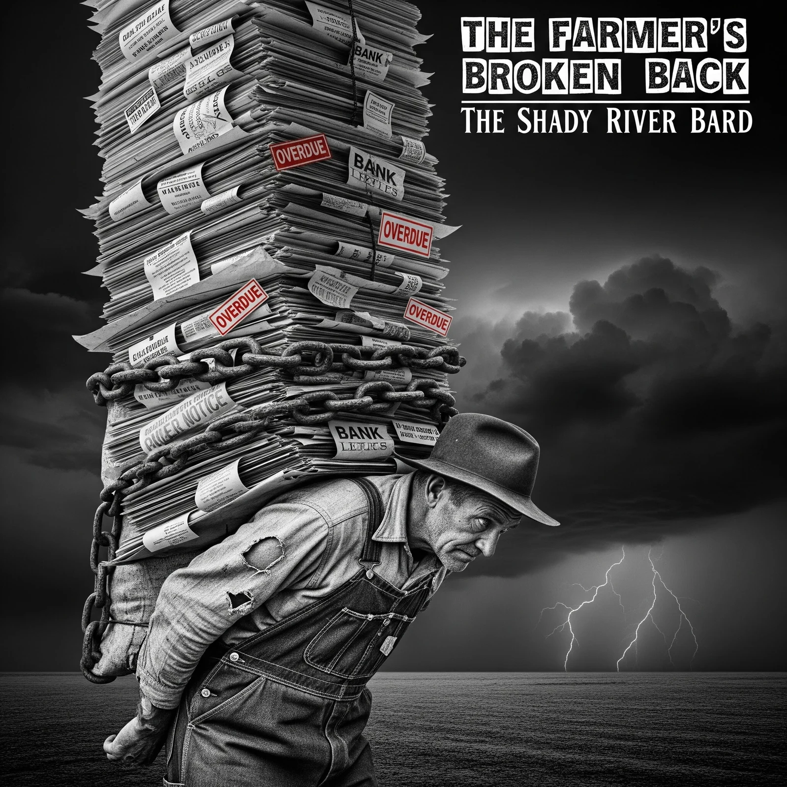
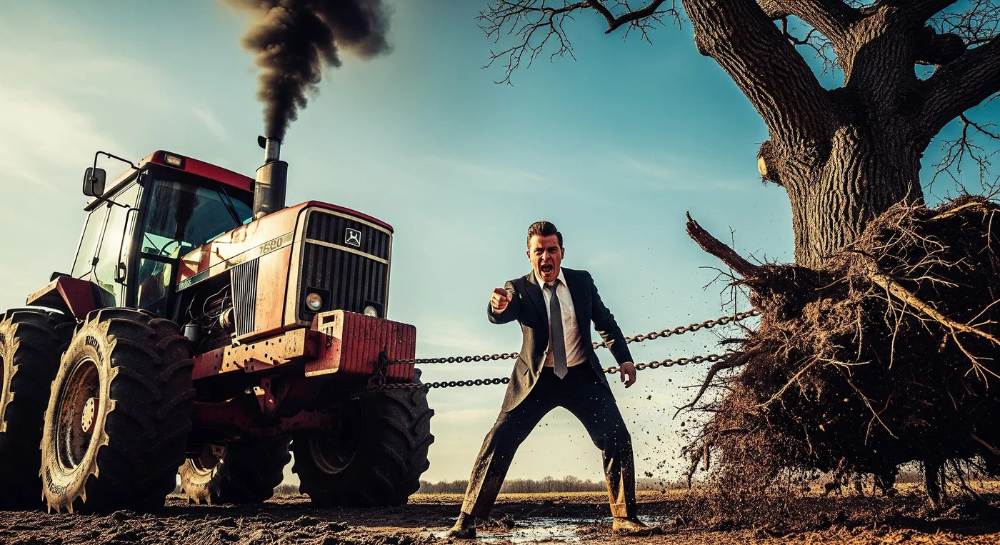
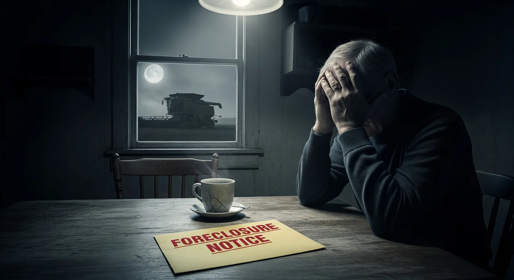

THE FARMER’S BROKEN BACK
A monumental, 15-track acoustic and roots-rock cycle chronicling fifty years of American agricultural upheaval. From Earl Butz’s 1970s decree to “get big or get out” and the catastrophic 1980s interest-rate collapse, through the consolidation of the Big Four meatpackers, predatory sterile-seed patents, and digital DRM tractor lockouts, to chemical drift lawsuits and the rallying cry of Sherman’s ghost to break the agricultural trusts.

The Agrarian Jukebox
Stream the complete 15-track album cycle with pure literary lyrics, economic mechanisms, and narrative sociological analysis.

1. Fencerow to Fencerow
In 1973, Secretary of Agriculture Earl Butz dismantled the New Deal supply management system, ordering farmers to plant “fencerow to fencerow” to feed the world.
The opening movement of the cycle. A Midwestern grain farmer tears down hedgerows and drains wetlands under federal instructions, caught in the euphoric trap of subsidized industrial expansion.
Thematic Exhibits: Anatomy of Consolidation
Explore the economic, technological, legal, and community mechanisms that reshaped American family agriculture over half a century.
Exhibit I: The Expansion Trap & The 1980s Interest Spike
In 1973, USDA Secretary Earl Butz urged American farmers to plant “fencerow to fencerow” to meet export demand from the Soviet Union. Guaranteed land appreciation and bank cheerleading drove unprecedented debt accumulation. But in 1979, the Federal Reserve under Paul Volcker hiked prime interest rates to 21.5% to curb inflation, while President Carter imposed a Soviet grain embargo in 1980.
Land values plummeted by more than 60% across the Corn Belt overnight. Farmers who held 80% equity on paper saw their collateral vanish while variable-rate debt skyrocketed. The resulting tidal wave of foreclosures precipitated the deepest rural crisis since the Great Depression and altered the demographic fabric of the heartland forever.

5-Act Agrarian Policy & Economic Architecture
A cross-sectional breakdown comparing historical eras, corporate mechanisms, financial metrics, and grassroots resistance vectors across all five acts.